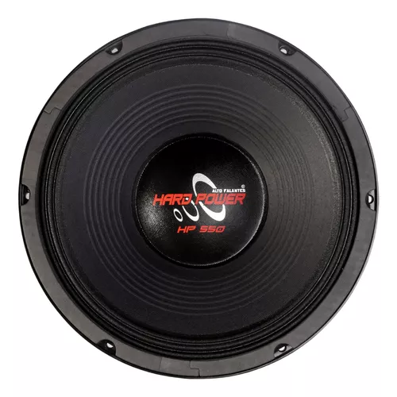
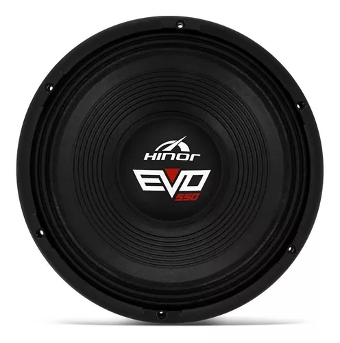
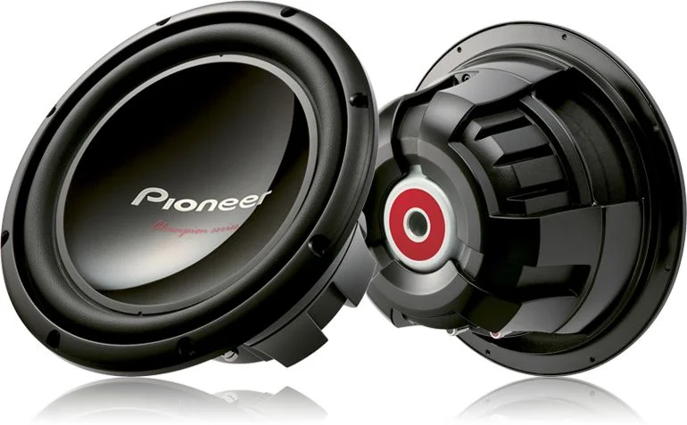

-

HARD POWER 550
Ficha tecnica
Informação Detalhes
Tamanho: 12”Categoria: Woofer
Fabricação
Situação: Em fabricação
Diâmetro Nominal: 12”
Resposta de Frequência: 45 à 4800hz
Potência Máxima: 550 Watts RMS
Potência Musical: 1100 Watts
Impedância: 2 ou 4 ohms
Sensibilidade (@ 1 W, 1 m) – 94,8 db
Resistência (RE): 2,8 ou 5,2 ohms
Área de Cone: 522,8 cm²
Frequência de Ressonância: 72
Volume Equivalente (VAS): 27,247
QMS: 13,71
QES: 0,851
QTS: 0,80
No Eficiência: 1,15
Compliância (CMS): 0,070
MMS: 69,61
XMAX (Máxima excursão do alto falante sem dano): 8
Diâmetro da Bobina: 3”
Material da bobina: Corpo em Kapton fio em CCAW
Carcaça: Alumínio
R$450,00
Carrinho
Total: 0.00
-

Alto Falante Hinor - 12" EVO 550 4 ohms
A EFICIÊNCIA QUE ESTÁ NO DNA COM POTÊNCIA EM DOBRO.
Com o 12” EVO 550 os apaixonados pelo grave de ataque vão sentir na pele a força da batida. O 12” EVO 550 foi projetado na medida certa para você.
Características:
Alta potência
- Bobina de 3 polegadas com fio e corpo de bobina importados;
- Pólo e arruela ventilados para maior refrigeração da bobina;
- Cordoalha com liga de prata para maior resistência e condutibilidade elétrica
;Conjunto Magnético Otimizado
- Conjunto magnético otimizado via software FEM (Método de Elementos Finitos), garantindo alta linearidade ao conjunto móvel;
- Ferrite de bário com 169mm de diâmetro externo e 24mm de espessura;
- Arruelas de grande porte com 11 mm de espessura, garantindo refrigeração ao transdutor;
Alta linearidade
- Tecido impregnado e compactado para criar uma centragem de alta rigidez;
- Calota com alta compactação de massa de celulose;
- Conjunto magnético otimizado com pólo estendido que garante a uniformidade do campo magnético;
- Suspensão em tecido que proporciona melhor resposta aos graves de ataque para pancadão;
Design arrojado
- Arruelas e pólo com banho em zinco para prevenir oxidação;
- Adesivo em material refletivo;
R$430,00
Carrinho
Total: 0.00
-

PIONEER
Descrição
O mais recente subwoofers da série Champion da Pioneer. O TS-W312S4 foi projetado para levar o nome da Série Champion para o próximo nível com uma série de melhorias.
Com um design de cone de peso leve / alta rigidez, surround híbrido de camada dupla, conjunto de motor grande e poderoso e estrutura de cesta fechada, os novos subwoofers da série Champion não só têm uma boa aparência, como também têm um desempenho ainda melhor!
Construção de cone rígido.
A combinação de uma grande tampa central rígida e uma estrutura de cone leve de alta rigidez melhora o desempenho de saída e reduz a perda.
O contorno híbrido de camada dupla aprimorada (polímero elástico e fibra) fornece um contorno mais leve e durável do que os compostos de borracha tradicionais.
Conjunto de motor potente.
Combinando um ímã simples (26% maior que nosso modelo anterior e alguns dos mais pesados em sua classe) com um design de bobina de voz mais longo, os subwoofers da série Champion são projetados para alta potência e resistência!
Especificações: -Tamanho: 30 cm (12 "). -Potência máxima : 1600 W. -RMS: 500 W. -Resposta de Frequência: 20 Hz a 1,6 kHz. -Sensibilidade (1W / 1m): 92dB. -Impedância: Simples 4O. -Profundidade de Montagem: 157 mm. -Dimensões de corte: 283 mm. -Frequência de ressonância: 38 Hz. -Xmax: 7,7 mm. -Invólucro recomendado: 35,4 litros.
Garantia:
3 Meses contra defeito de fabricação
R$580,00
Carrinho
Total: 0.00